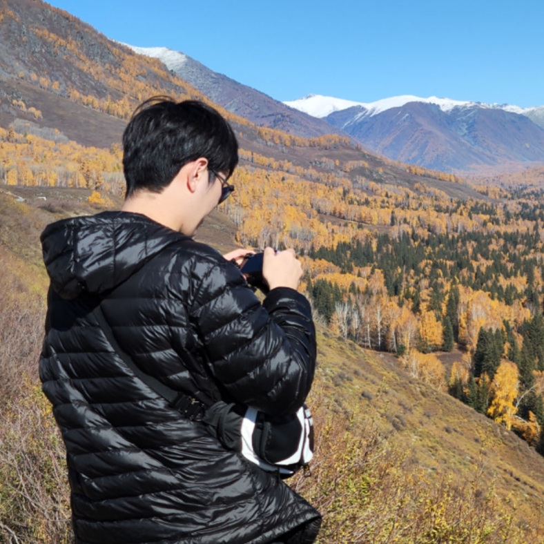

|
WANG, Jun |
 |
I started my Ph.D. study at the School of Computer Science, the University of Sydney in 2024. Before that, I got my master's degree in computer science in June 2021 from the LAMDA group at Nanjing University and my bachelor's degree in computer science in June 2018 from the University of Science and Technology of China, respectively. I also have industry experience as an algorithm engineer for TikTok's video recommendation system.
Currently, I am mainly focusing on following fields:
AI for Science: I explore how AI can push the frontiers of chemistry and materials science, developing and deploying advanced machine learning interatomic potentials to enable larger-scale and realistic simulations.
Machine learning theory: I am equally drawn to the foundations of machine learning, from margin theory and causal discovery to privacy and fairness, seeking new directions in the era of large models.
Jun Wang, Yu Yang, Jialei Huang, Jiaxiang Chen, Yaohui Shi, Fengwang Li, Aoni Xu, Tongliang Liu. Surface phase separation in CuAg alloy from ML-accelerated molecular dynamics. In submission.
Yu Yang*, Jun Wang*, Yaohui Shi, Xue Han, Yuhang Wang, Biswaranjan Mohanty, Jie Zeng, Tongliang Liu, Aoni Xu, Fengwang Li. Decoupling product selectivity in electrocatalytic CO2 reduction by steering interfacial water structure. In submission.
Yifan Zeng, Jun Wang, Fengwang Li, Tongliang Liu, Aoni Xu. AI-Accelerated Discovery of Electrocatalyst Materials. ACS Materials Au, 2025.
Xiu-Chuan Li, Jun Wang, Tongliang Liu. Recovery of Causal Graph Involving Latent Variables via Homologous Surrogates. Proceedings of the International Conference on Representation Learning, 2025.
Jun Wang, Zhi-Hua Zhou. Margin Distribution Analysis. IEEE Transactions on Neural Networks and Learning Systems, 2021.
Jun Wang, Zhi-Hua Zhou. Differentially Private Learning with Small Public Data. Proceedings of the AAAI Conference on Artificial Intelligence, 2020.
Algorithm Engineer, TikTok, ByteDance, 2021 ~ 2022
Algorithm Engineer (Intern), Youku, Alibaba Group, 2020